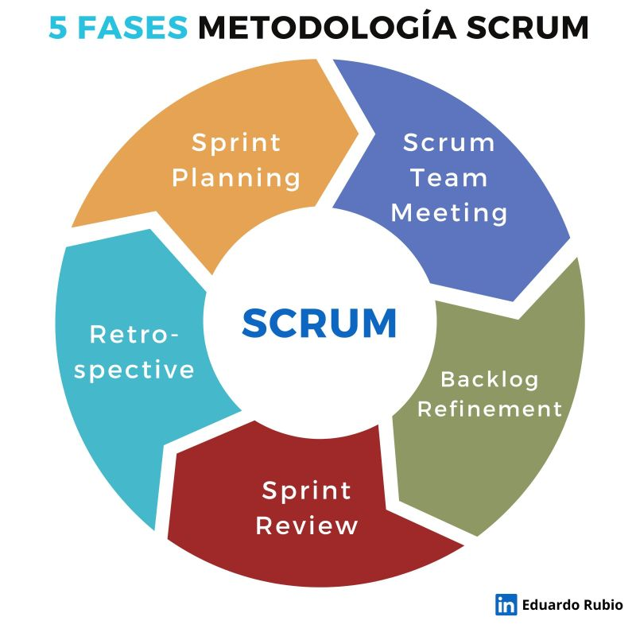
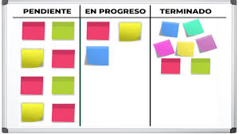
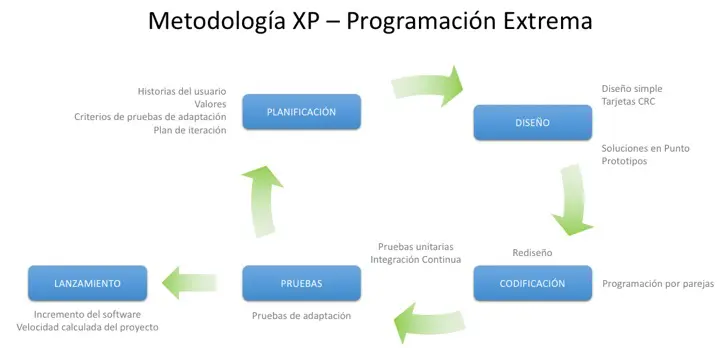

METODOLOGIA AGIL

son aquellas que permiten adaptar la forma de trabajo a las condiciones del proyecto, consiguiendo flexibilidad e inmediatez en la respuesta para amoldar el proyecto y su desarrollo a las circunstancias específicas del entorno.
TIPOS DE METODOLOGIA AGIL
programación extrema (XP), Scrum y Kanban
/article>
METODOLOGIA SCRUM

Scrum es un marco de administración que los equipos utilizan para organizarse por cuenta propia y trabajar en aras de alcanzar un objetivo común. Describe un conjunto de reuniones, herramientas y funciones para entregar proyectos de forma eficiente.
Caracteristicas
Se adapta fácilmente para dar cabida a proyectos legales más pequeños.
Funciona muy bien en proyectos legales en los que los miembros del equipo asumen varias responsabilidades de gestión, y no hay un director de iniciativa claramente definido.
También puede adaptarse a situaciones en las que el tiempo de entrega rápido es la norma y esencial para el éxito.
Ventajas
Establecer una dirección estratégica para el estudio.
Liberar recursos para trabajar en los asuntos de mayor prioridad.
Eliminar impedimentos para que los equipos puedan ser más productivos.
Desventajas
Se aplica a equipos reducidos
Requiere una exhaustiva definición de las tareas y sus plazos
Requiere de perfiles senior en su aplicación
Aplicar un enfoque Scrum para grandes proyectos se establece un reto ya que puede fallar la coordinación precisa, por lo que no garantiza que sea escalable a largo plazo.
para trabajar con Scrum la empresa debe pasar por ciertas transformaciones organizativas en sus departamentos y áreas.
METODOLOGIA KANBAN

La metodología Kanban se implementa por medio de tableros Kanban. Se trata de un método visual de gestión de proyectos que permite a los equipos visualizar sus flujos de trabajo y la carga de trabajo. En un tablero Kanban, el trabajo se muestra en un proyecto en forma de tablero organizado por columnas.
Caracteristicas
reduce considerablemente que fallen los proyectos grandes de software, ya que evalúa repetidamente los riesgos y verifica cada vez el producto en desarrollo.
Este modelo informático contiene componentes de casi cualquier otro modelo del ciclo de vida del software, como el modelo de cascada, el modelo de creación de prototipos, el modelo iterativo, el modelo evolutivo, etc.
Ventajas
Mejoras la distribución de las tareas
Consigues agilidad
Organizas la carga laboral
Evitas el exceso de trabajo
Aumentas la calidad de tus productos
Consigues entregas puntuales
Fomentas la labor en equipo
Desventajas
Kanban no es de utilidad para todo tipo de industria, por lo que deberás analizar si es lo que necesitas, y si no, buscar otra solución.
si llegara a existir una productividad más elevada, es muy difícil planificar y dividir los pasos, por lo que es mejor utilizarlo en situaciones más reducidas y controlables.
aun cuando es un método útil y accesible, sus fundamentos se basan en modalidades y principios orientales, por lo que la diferencia cultural puede significar un obstáculo. Te sugerimos analizar los pasos y principios para poderlos incluir de forma adecuada en tu ámbito laboral.
METODOLOGIA EXTREME PROGRAMMING O XP

Es una metodología cuyo objetivo es crear sistemas de alta calidad, basados en una estrecha interacción con los clientes, pruebas constantes y ciclos de desarrollo cortos .
La idea es "modernizar" la tradicional secuencia de desarrollo en cascada, que analiza, diseña, implementa y prueba, entendiendo que se trata de un modelo burocrático y algo flexible ante un mundo en constante transformación.
Caracteristicas
Satisfacer al cliente
Generar entregas y mejoras continuas
Prepárese para los cambios durante todo el proceso.
Garantizar la calidad, incluso si ocurre en un período de tiempo más corto.
Trabajando en un equipo
Ventajas
Da lugar a una programación sumamente organizada.
Ocasiona eficiencias en el proceso de planificación y pruebas.
Cuenta con una tasa de errores muy pequeña.
Propicia la satisfacción del programador.
Fomenta la comunicación entre los clientes y los desarrolladores.
Facilita los cambios.
Permite ahorar mucho tiempo y dinero.
Puede ser aplicada a cualquier lenguaje de programación.
El cliente tiene el control sobre las prioridades.
Se hacen pruebas continuas durante el proyecto.
La XP es mejor utilizada en la implementación de nuevas tecnologías.
Desventajas
Es recomendable emplearla solo en proyectos a corto plazo.
En caso de fallar, las comisiones son muy altas.
Requiere de un rígido ajuste a los principios de XP.
Puede no siempre ser más fácil que el desarrollo tradicional.